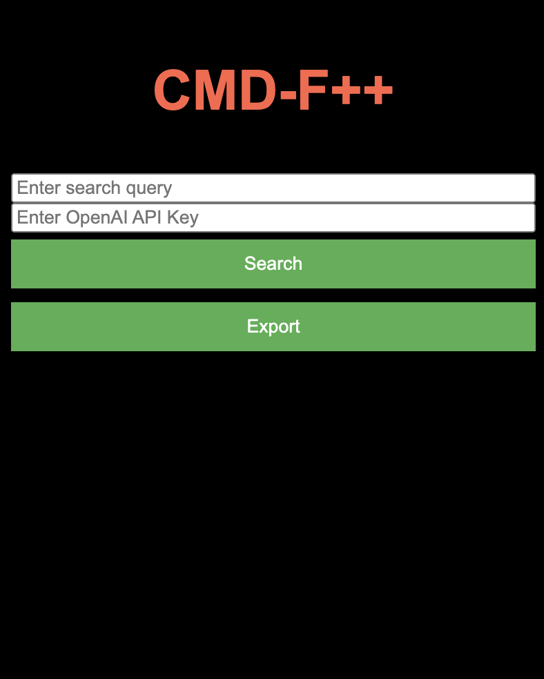

CMD-F++
For years, the search functionality in Chrome has stayed the exact same. It posed problems such as needing a specific keyword to gather information about a particular topic and the need to view all the keywords in the document to get a full understanding of the subtopic you are interested in. If only there were a solution...
Well look no further! Introducing CMD-F++, the update that we all needed! Leveraging technologies like Javascript, HTML, CSS, BlobAPI and the famous OpenAI API, with a search query for a website and a OpenAI key, the client can scrape any website for any subtopic they wish to learn more about without wasting time scouring the entire website guessing and checking keywords that will lead them to the information.
The user then can choose to scrape as many websites as they want and export the collected information into a .txt file!